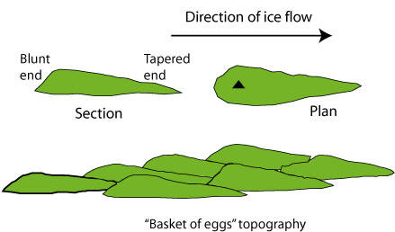

Drumlins
Sunday 17 November 2019
@morphology @glaciers @debate @landforms @FOPG @GEOGRAPHY @drumlins @YEAR1
@drumlins are @subglacial_bedforms
Source: https://www.sheffield.ac.uk/drumlins/drumlins

An oval-shaped hill, largely composed of glacial drift, formed beneath a glacier or ice sheet and aligned in the direction of ice flow. There are no strict definitions relating to their size but they tend to be up to a few kilometres long and up to 50 m in relief. They are widespread in formerly glaciated areas and are especially numerous in Canada, Ireland, Sweden and Finland. Drumlins are considered to be part of a family of related landforms including FLUTES, MEGA-SCALE GLACIAL LINEATIONS, and ROGEN MORAINE which are collectively referred to as SUBGLACIAL BEDFORMS. Their formation remains controversial (see below) but in spite of this they are extremely useful for reconstructing former ice sheets. The word drumlin is a derivation of a Gaelic word for a rounded hill.
Whilst there are many variations in shape, the `classic´ drumlin is a smooth, streamlined hill that resembles an egg half buried along its long-axis. They tend to exist as fields or swarms of landforms rather than as isolated individuals, with a typical swarm comprising tens to thousands of drumlins. Viewed en masse, drumlins within a swarm display a similar long-axis orientation and morphology to their neighbours, and are closely packed, usually within two to three times the dimensions of their drumlin length. The majority of drumlins in a swarm have their highest elevation and blunter end pointing in an upstream direction, with the more gently sloping and pointed end, or tail, facing down-ice. The upstream blunt end is called the stoss end and the downstream end called the lee. A common measure of their shape is the elongation ratio, which is the maximum drumlin length divided by maximum width. Typical elongation ratios are 2:1 to 7:1. Variations in drumlin shape include spindle-like forms, two-tailed forms resembling barchan dunes in plan view, and they also exist as perfect circular hills with an elongation ratio of 1:1. There is a whole branch of investigation, called drumlin morphometry, which uses measures of shape, size and spacing to try and develop or test theories for their formation.
The timing or synchroneity of drumlin formation within a field remains unknown. Some researchers deem drumlin formation as occurring close to ice margins and believe fields are built up incrementally as the margin retreats, whereas others believe that extensive patterns of drumlins may have formed approximately synchronously under wide swathes of an ice sheet. Drumlin patterns have been found to lie cross-cutting each other with some superimposed upon others. This demonstrates that older landforms can be persevered beneath ice flow and that more than one flow direction is recorded
The internal composition of drumlins reveals a perplexing array of different sediment types and structures. Some have rock cores surrounded by a concentric sheath of till, but they are mostly filled with unconsolidated sediments that are poorly sorted, and may contain silts, sands, gravel and boulders. They may however also be found with fluvially-sorted sediments at their core or in a lee-side position. Some interpret this as demonstrating that fluvial deposition was part of the drumlin formation process but others favour a two-stage process of fluvially-deposited material which was later shaped into a drumlin. Tectonic structures such as thrusts and folds have also been found and have been taken to imply the sediments have been deformed during the drumlinisation process.
Due to the inaccessibility of glacier beds nobody has been able to observe a drumlin actively forming and so it is perhaps no surprise that their formation remains something of a mystery. Part of the difficulty is that a good theory must be capable of explaining the full range of observed drumlins and other subglacial bedforms and their wide variation in shapes, scales and internal composition. There have been many hypotheses and theories that attempt to explain their formation. Menzies (1979) and Patterson and Hooke (1995) provide good overviews of the `drumlin problem´. Put simply, drumlins may have formed by a successive build of sediment to create the hill (i.e. deposition or accretion) or pre-existing sediments may have been depleted in places leaving residual hills (i.e. erosion), or possibly a process that blurs these distinctions. Hypotheses have been proposed for all these cases but most common have been those involving some form of sediment accretion. These however, have difficulty explaining drumlins with cores of pre-existing fluvially-sorted sediments.
Observations of the nature of the bed of contemporary ice sheets have revealed that the forward motion of ice, can in part, be accomplished by deformation of the soft sedimentary bed. This has led to the deforming bed model of glacier flow, which has become the most widely accepted, but still unproven, mechanism for drumlin formation. If the sediments of the bed are weak they may deform as a result of the shear stress imparted by the overlying ice. If parts of this deforming till layer vary in relative strength, then the stronger stiffer portions will deform less and remain static, whilst the intervening weaker portions will deform more readily and become mobile. The relative strength is thought to be controlled by grain size, with coarse grained sediments (e.g. gravels) remaining strong as they do not allow a build up of pore water pressures, and fine grained sediments as easily deformable. So a till layer with spatially variable strength will have static or slow moving strong patches, around which the weaker more deformable till will flow. This can explain the cores of drumlins (strong patches; rock-cored, coarse-grained or with preserved fluvially-sorted sediments) surrounded by more easily deformed till which is responsible for the streamlining. It also explains the occurrence of folds and thrusts commonly observed in drumlins. In this deforming bed model of drumlin formation (Boulton, 1987) the position of each drumlin is controlled by sediment inhomogenieties and the streamlined shape by deformation. As deformation continues, drumlins may be uprooted and become mobile.
An alternative to the above, is a model developed by Shaw, et. al. (1989) and colleagues that views drumlins and other subglacial bedforms to be the result of meltwater erosion and deposition as a consequence of large floods beneath the ice. In this meltwater model, regional scale outburst floods from the central regions of the ice sheet produce sheet flows of water, tens to hundreds of kilometres wide and deep enough to separate the ice from its bed. Turbulent water during the floodstage erodes giant drumlin-shaped scours in the base of the ice, which are then infilled with sediment as the flood wanes and as the ice presses down onto its bed. This is the cavity-fill drumlin and explains how fluvially-derived sediments may appear in drumlins. A related mechanism is also thought to operate whereby vortices in the flood water erode down into the till bed leaving intervening ridges of the original material, which are the second type of meltwater drumlins. These could therefore contain tills or almost any material, as the composition is unrelated to shaping event.
The difficulty in evaluating these theories arises from the fact that the deforming bed and meltwater models are each so comprehensive as to be able to predict the wide variety of observed drumlin characteristics. This makes it hard to use geomorphological observations to test between them. Also, both are still at the stage of qualitative theories rather than physically-based models. Deforming beds have been observed to exist and so have subglacial floods, the question remains as to which are capable of producing drumlin forms and over the widespread patterns for which they are observed. The answers must surely lie in numerical modelling to examine plausible mechanisms tested against large-scale drumlin patterns and internal structures.
Backlinks: Home:Fundamentals of Physical Geography:Landforms:Glacial Landforms:Subglacial Bedforms